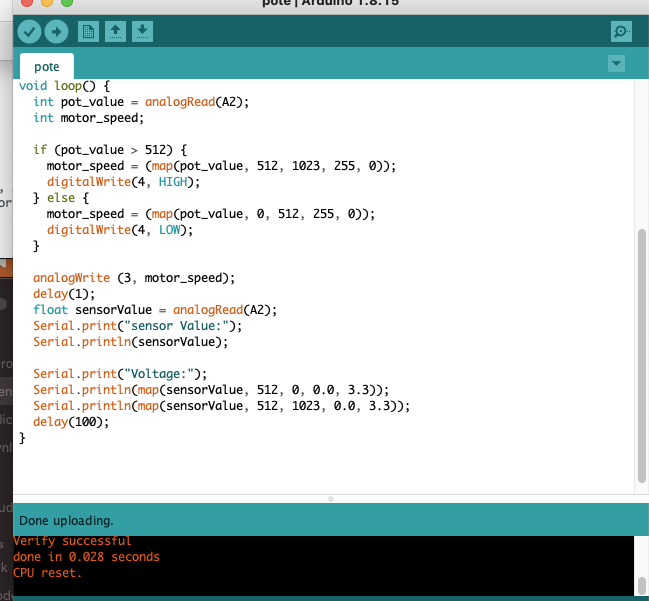
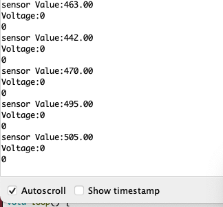

PHYS S-12: Introduction to Digital Fabrication
Nicola Hensch
Week 4: Rapid Prototyping
Assignment
Make and document either a kinetic sculpture or a quick prototype of a possible final project. Should include an electronic circuit with physical components from the kit as well as house-hold items.
- Includes circuitry to move your sculpture
- control the sculpture with a circuit on a breadboard that uses components in the kit like resistors and potentiometers. Measure the voltage and use Ohm's law to calculate the curerrent.
- Document your work and include at least one gif/video.
Possible Final Project
For this assignment I decided to try and make a very rough prototype of one of the many possible final project ideas I came up with. Although this is not one of the ideas I have listed on my Final Project tab, I decided to go with it anyway since I thought it was a more manageable idea. I had never prototyped anything before so I wanted to start off with something simple before diving into more complicated things. I decided I wanted to attempt to make a simple display structure that would rotate different objects, allowing for them to be seen from all angles. I began by making a simple circuit which is shown below, containing an LED and potentiometer. At first I wanted the LED to illuminate the onjects from below but I came to realize that the spinning platform, controlled by the potentiometer, would tangle the wires. After making the circuit, I measuered the voltage and resistance at different points within the circuit. I was unable to get a photo of myself measuring the voltages, but I attached a diagram of my circuit with the measurments and my calculations when trying to find the current below. I stuggled to find the resistance through the potentiometer, so I was only able to find the current through the lightbulb.


In order to measure the voltage of the potentiometer as I rotated the knob, I adapted a simple code that I learned the previous week. It is an adaptaion of the Microcontroller Analog In, or ADC basic example which can be found beneath the file tab while using Arduino IDC. I changed the analogread integer and added the serial print function for both the sensor value and voltage. I was able to translate the sensor value to voltage by using the map function and correlating the sensorvalues to the voltage range. I repeated this map function but with a different range of sensorvalues because the code which dictates the motion/direction of the motor allows it to work in two directions. These directions are determined by sensor value ranges which are the same as I implemented in the map functions. The whole code, which also makes the motor run in both directions, is seen below.
 After creating my circuit and measuring the voltages within it, I put it into a small cardboard box I had in my house. This was a little difficult to do since the base of the box was a little too small to hold both the bread board and micro controller. Because of this I had to change the wiring of the circuit a little. The changes I made was providing longer cables to for ground and power to the bread board from the microcontroller and seperating the points of contact of the potentiometer circuit and LED circuit. After all the wiring was in place, I cut out small holes at the bottom sides of the box so that I could connect my USB cable to the microcontroller and control the potentiometer. I also cut a large hole through the top of the box for my motor. Looking back, I now realize that I made the hole too big which made the motor unstable while it was spinning. Because of this, I added a peice of cardboard with a hole the same size as the motor body, measurments I took with my calipers, to the top of the box. I wanted the hole to be the same size as the motor body since I knew that the cardboard is bendable and easily manipulated. This extra peice of cardboard is not shown below but will be seen in later photos.


Now that I had my motor all set, I just had to mount a platform. Although it sounded very simple, this step actually took me the longest to figure out. Before adding the small carboard layer to keep the motor secure, the motor would constantly seperate from the platform due to it's movement. I think I also had a problem with this step because of the tools I used to connect the two peices. I decidded to use electrical tape since it was the most easily available adhesive for me, but if I were to make another prototype I would have used something stronger like Duct Tape. In the photos you will also see small peices of cardboard attached to the bottom of the platform. These peices were meant to be bumpers to the top of the box, but they became useless when I lifted the motor with the cardboard layer as mentioned above. Below is a close up of the connection between the cardboard platform and the motor as well as the final product. As you can see, I moved the location of the LED to next to the potentiometer handle so it could serve as an indication to wether or not the contraption is powered. Havung done this prototype, I now realize how simple an idea this is for a final project. Although there are many ways I could make this better, I think that I am going to move away from this option for my final project.